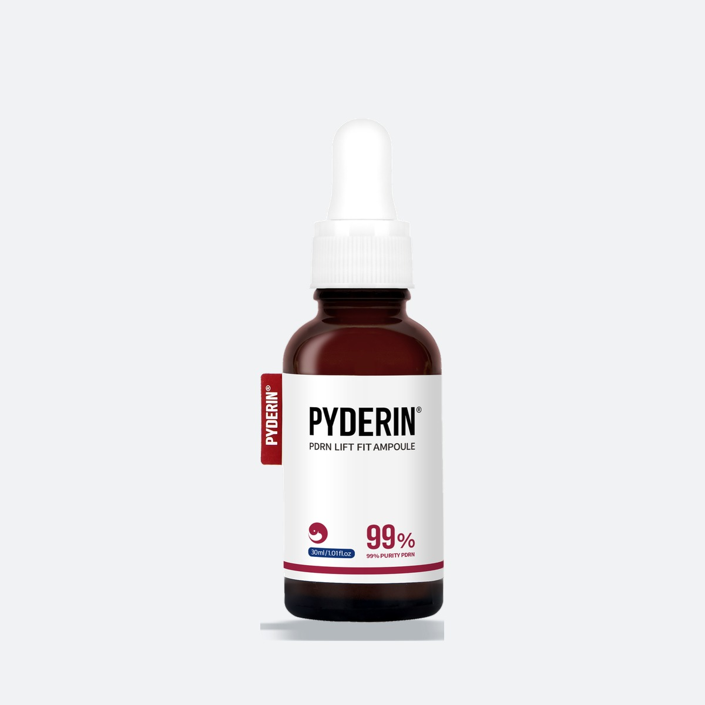
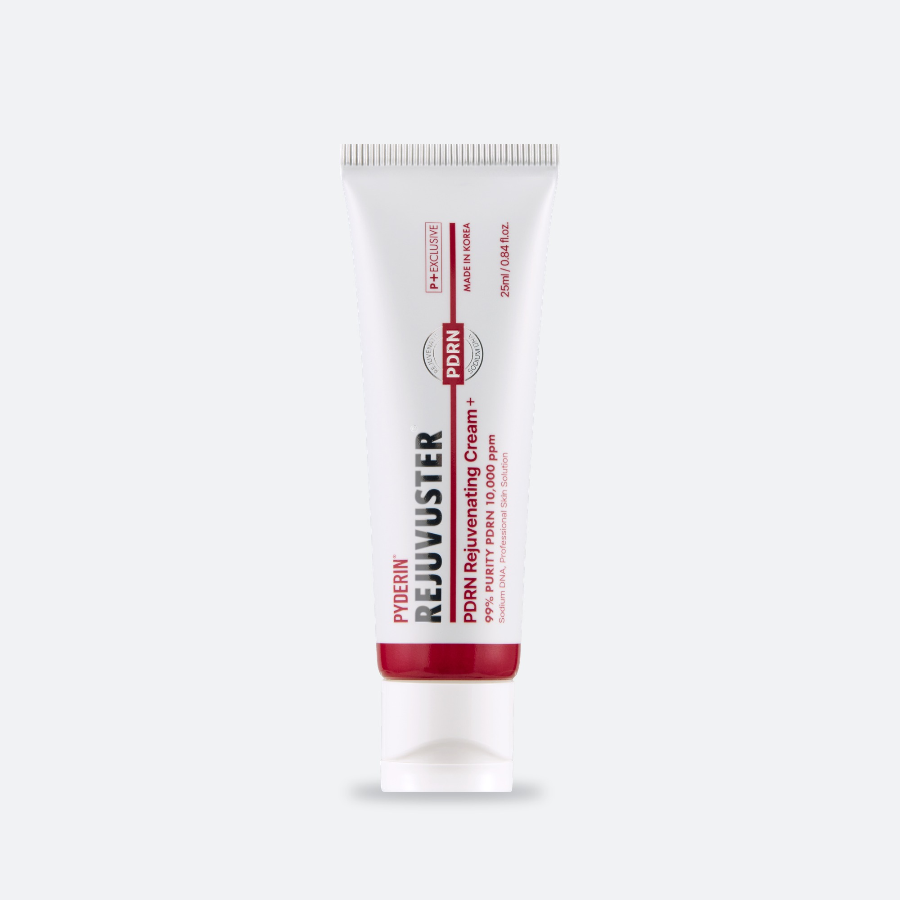

10,000 ppm PDRN with niacinamide and ceramide.
As stated on each product's detail page.
PDRN Lift TonerStep 01100 ml2,000 ppm280 Dalton low molecular collagen, Acetyl Hexapeptide-8, 10 types of fermented probiotics공식 상세페이지 2,000ppm · 아마존 상품명은 20000ppm(리스팅 수정 필요)PDRN Lift Fit AmpouleStep 0230 ml2,000 ppm300 Dalton low molecular collagen, 9 types of firming peptides, 10 types of fermented probiotics공식 영문 상세페이지 표기PDRN Lift CreamStep 0330 ml20,000 ppmPanthenol 20,000ppm, Super Centella 10,000ppm, low molecular collagen, Acetyl Hexapeptide-8공식 영문 상세페이지 표기PDRN Lift Facial MaskWeekly5 sheets2,000 ppmLow molecular collagen, Acetyl Hexapeptide-8, 15 types of fermented probiotics공식 영문 상세페이지 표기REJUVUSTER Cream+Pharmacy line25 ml10,000 ppmSECOLGI, 11-strain microbiome complex, panthenol · ectoine · squalane, Cica complex99% pure PDRN refers to the purity of Derbiome® PDRN 10K Sodium DNA.